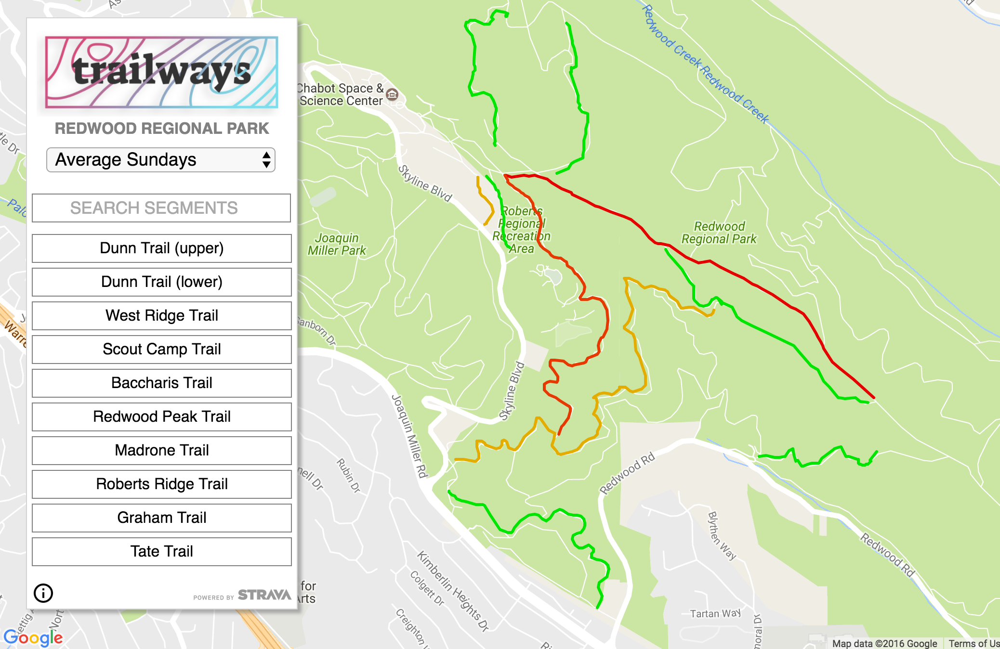

HAIKUr
HAIKUr is a haiku-blogging web application with a clean user experience. Built using Python, Google's webapp2 framework, Google App Engine, Google Cloud Datastore, and jQuery.
github repository for HAIKUr

Trailways
Trailways gives horseback riders a way to avoid bicyclists on park trails (whom pose a perceived threat to horses). Trail traffic data is integrated from the Strava API, which cyclists use to track their rides. Built using Python, Flask, Javascript, Knockout.js, and jQuery and deployed on Heroku.
github repository for TrailwaysTwitter Analytics Data Download
Since Twitter doesn't currently offer API access to analytics data for owned accounts, the only option offered is a CSV download button that must be clicked. This Python script automates login and button clicking, for automating the data download process.
github repository for Twitter data download